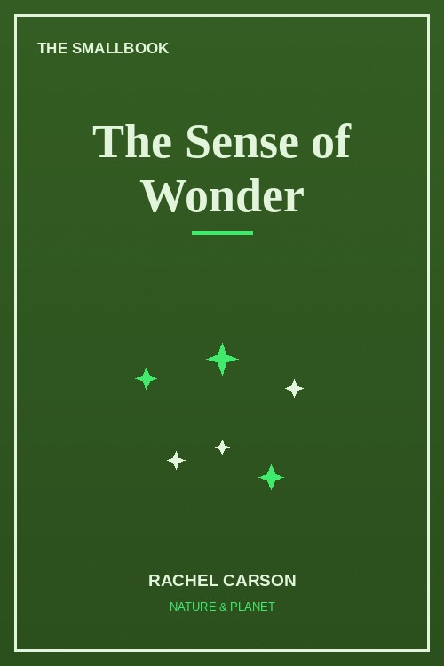

Library › Nature & Planet
The Sense of Wonder - Summary & Key Lessons

Rachel Carson's quiet masterpiece on keeping a child's wonder alive, written with her grandnephew on the Maine coast.
📖 OPEN THE FULL INTERACTIVE BREAKDOWN →🌐 Read it in Hindi, Hinglish, Gujarati, Tamil & 22 more languages, with audio.
💡 The Big Idea
Rachel Carson wrote this short book from exploring tide pools, woods and night skies with her young grandnephew Roger. Against the idea that children need nature facts, she argues they need companions in astonishment: adults willing to get wet, stay out past bedtime for owls, and receive a child's discoveries as news. The senses come first; taxonomy later. The book closes with her wish for every child: a sense of wonder so indestructible it lasts a lifetime, an unfailing antidote against the boredom and disenchantments of later years.
🧠 The 8 Key Lessons
Lesson 1: Feeling Before Facts, Always
The Sense of Wonder
Rachel Carson's pedagogy in one line: it is not half so important to know as to feel. A child taught names and classifications before awe learns to treat nature as an exam; a child given shared astonishment first asks for the names herself, and keeps them. She is describing sequencing, not anti-intellectualism, from the authority of a scientist: her own marine biology began in exactly this order, in tide pools, and the facts found a prepared home because the wonder had furnished it.
📖 Example: She watches Roger, at twenty months, delighted by crashing surf he cannot name, and builds the book on such scenes: the child needs no lecture on the ocean to receive what the ocean teaches. Adults who insist on the lecture first, she suggests, are protecting themselves from feeling foolish beside a child's unembarrassed awe. Read the full example →
⚡ Do this: Take one child, yours or borrowed, to water, woods or dark sky this week. Answer questions last; wonder out loud first.
Lesson 2: The Adult's Job Is Companionship, Not Instruction
The Sense of Wonder
Rachel Carson relieves adults of expertise: you do not need to know the species; you need to share the excitement, rediscover your own forgotten joy in the feel of wet grass and the smell of rain, and let the child lead the expedition. The companionship requirement is deliberately low and therefore damning: one adult, present and pleased, is the entire infrastructure a child's sense of wonder needs to survive into adulthood.
📖 Example: Her expeditions with Roger run on his agenda: night walks to hear owls, beaches at storm tide, a Christmas tree made for birds. She narrates her own reawakening alongside his awakening, the adult recovering through the child exactly what the book prescribes for both. Read the full example →
⚡ Do this: Schedule one child-led outdoor hour this month: their route, their pace, your only job is delighted company.
Lesson 3: Wonder Is an Antidote Stocked in Advance
The Closing Wish
The book ends with Rachel Carson's famous wish, that every child receive a sense of wonder so indestructible it would last throughout life. She names what it protects against: the boredom and disenchantment of later years, the sterile preoccupation with things artificial. Written by a woman already famous for warning the world about pesticides, the wish reads as strategy: people defend for a lifetime what first astonished them as children. Conservation, in her account, is downstream of nursery weather.
📖 Example: The generation that read Silent Spring and built environmental law was raised partly on this sensibility; Rachel Carson understood she was writing both the alarm and the reason anyone would answer it. Environmental educators still open courses with this slim book before any policy text. Read the full example →
⚡ Do this: Name your own earliest wonder memory and tell it to a child this week. You are stocking their antidote and refreshing yours.
Lesson 4: The Night Sky Curriculum
Explorations
Rachel Carson gives the night its own chapter: children taken out after dark meet a second world, owls, moths, stars, the smell of the earth cooling, and learn that nature is not a daytime exhibit. She is practical about the obstacles, bedtimes, fears, city light, and romantic about the returns: a child who has held the dark as friendly carries a different nervous system into adulthood. The darkness, like the tide pool, teaches without a syllabus, provided one adult is willing to be out in it, unhurried.
📖 Example: She describes listening with Roger to the night voices of the Maine woods, naming almost nothing, returning by flashlight with the boy asleep on her shoulder. The scene's pedagogy is the book in miniature: presence first, and the facts trailing happily behind the feelings for years afterward. Read the full example →
⚡ Do this: Hold one night expedition this month: owls, stars or simply the garden after dark, with the bedtime extended by decree.
Lesson 5: Rain, Storms and the Education of the Senses
Explorations
Weather adults cancel plans for is Rachel Carson's classroom: rain on leaves at different tempos, the beach before a storm, the smell of the woods after. She urges adults to let children get wet, cold and muddy inside reasonable safety, because the senses learn by weather as the mind learns by books, and a childhood sealed against weather produces adults for whom nature is a picture. The joy she describes is deliberately physical, almost edible, and quite unlike the classroom's.
📖 Example: Her account of Roger's delight in a stormy shoreline, shrieking with the gulls, is quoted by every outdoor educator since, precisely because no instruction occurs in it. The boy is learning the ocean at the level the ocean actually teaches, and the adult's whole contribution is staying. Read the full example →
⚡ Do this: Next rain, take the child out in it briefly by choice: puddles, leaf sounds, the smell after. Towels and cocoa are the debrief.
Lesson 6: What to Do With a Dead Bird and Other Questions
The Adult's Replies
Rachel Carson anticipates the adult's hardest moments: the found dead bird, the eaten butterfly, the question of why. Her counsel is honesty at the child's scale, without either flinching or burdening: death is part of the pattern, grief is permitted, and the cycle is visible everywhere once an adult dares to point. Children, she finds, are sturdier than their protectors, and the adult who models reverent honesty at the dead bird is teaching the curriculum the whole book exists to deliver.
📖 Example: She watched Roger bury a bird with ceremony entirely of his own design and learned, she writes, to supply the box and the quiet rather than the theology. The grave got flowers. The questions got straight answers, sized to the asker, and the afternoon is remembered as one of their best. Read the full example →
⚡ Do this: At the next small death or hard question, supply the box and the quiet: honest answers, child's scale, no flinching.
Lesson 7: Seeds of Wonder in the City
For City Children
Rachel Carson closes the practical argument by refusing the countryside monopoly: weeds in the pavement, pigeons, the park's pond, night skies washed by light still deliver the curriculum wherever a child and an unhurried adult attend together. Her examples were mid century; the principle has only widened, to window boxes, canal towpaths and rooftop gardens. The requirement was never wilderness. It was witness, and witness is available at every postcode.
📖 Example: City nature educators built whole programmes on this passage, from balcony bird counts to drain spotting after storms, and report the same result Rachel Carson promised from Maine: the child who has wondered locally defends the planet globally, in the order she prescribed. Read the full example →
⚡ Do this: Start one city ritual this week: a pavement weed census, a balcony bird count, or a towpath walk repeated monthly.
Lesson 8: Sustaining Wonder in the Adult Reader
The Sense of Wonder
Carson's essay is secretly addressed to tired adults: the child's wonder needs companionship partly because the adult's is dying of knowledge's side effects, names without mystery, facts without feeling. Her cure is reciprocal teaching, let the child lead the adult back to the tide pool's astonishment while the adult supplies patience and sandwiches. Deepening means scheduling wonder as maintenance for yourself, not only as childcare. A life whose last astonishment is decades old will make fear based decisions with great confidence.
📖 Example: Carson wrote the piece for her grand nephew Roger, and their beach walks in Maine became the template thousands of grandparents still follow. She died before expanding it into the planned book, and the essay's unfinished scale is part of its discipline: a beginning, practised yearly, outlasts a syllabus. Read the full example →
⚡ Do this: Let a child, a neighbour's, a relative's, or a younger colleague, lead you somewhere outdoors this month. Carry the snacks; let them carry the itinerary.
✅ 5-Step Action Plan
- One child, one wild place, this week; wonder first, answers last.
- Run one child-led outdoor hour monthly.
- Tell your earliest wonder memory to a child this week.
- Keep a family phenology list: first frog, first frost, first swallow.
- Let one night walk happen past bedtime for owls or stars.
- Resist one lecture; ask what do you notice instead.
- Read the book aloud to an adult who has forgotten.
⚠️ When This Doesn't Work
It is a short, gentle work of its era, assuming access to coast or countryside that urban readers must translate to parks, rivers and night skies. Rachel Carson's science legacy is treated elsewhere in this library; this is her book about joy.
💀 The Graveyard Proves It
💬 Best Quotes from The Sense of Wonder
- “If a child is to keep alive his inborn sense of wonder, he needs the companionship of at least one adult who can share it.”
- “The more clearly we can focus our attention on the wonders and realities of the universe, the less taste we shall have for destruction.”
- “It is not half so important to know as to feel.”
Interactive version: mark lessons as read, listen in your language, share quote cards.